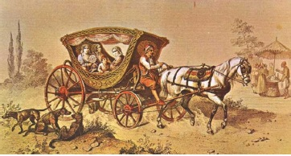

17. yüzyıl ortalarında, 1647 yılında da, bir sinir hastası olan Sultan İbrahim, İstanbul şehrinin içine gündüzleri araba girmesini yasak etmişti. Bir gün Davutpaşa’daki bir üfürükçü hocaya okunmaya giderken yolda bir arabaya rastladı. Son derece sinirlendi ve bu basit zabıta olayından sadrazamı sorumlu tuttu. Sadrazam Boşnak Salih Paşa’yı (ki değerli, namuslu bir vezir olarak bilinirdi) gittiği üfürükçünün evine çağırttı ve hazırda başka ip bulunamayınca, koca sadrazamı gözünün önünde bir kuyu ipi ile boğdurttu.
Tarihçi İsmail Hakkı Uzunçarşılı ise Vecihî Tarihi’ne yaptığı bir atıfla, Boşnak Salih Paşa’nın aslında padişahın tahttan indirilmesi konusunda çalışmalar yaptığı ve durumun Şeyhülislam Abdürrahim Efendi tarafından Valide Sultan’a bildirilmesi sonucu öldürüldüğünü, araba yasağı ihlalinin basit bir bahane olduğunu öne sürmektedir.

Osmanlı’da at arabası